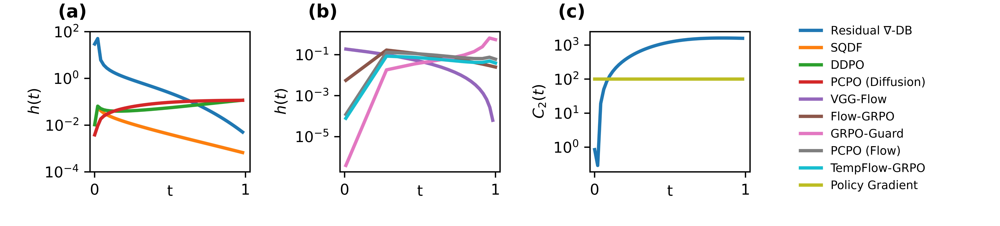
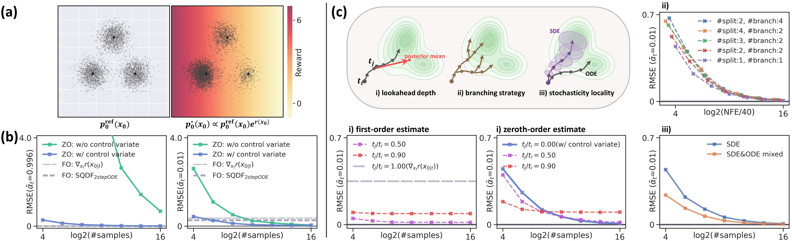
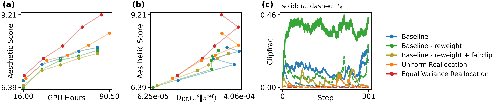
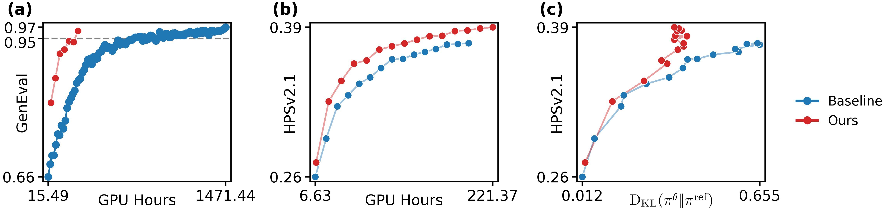
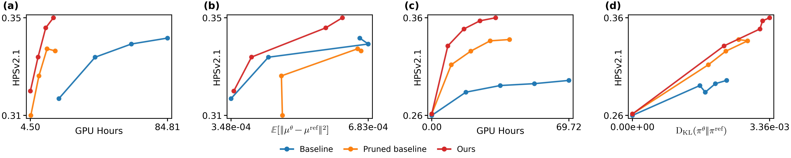
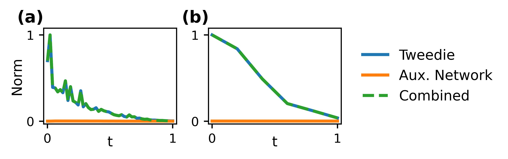
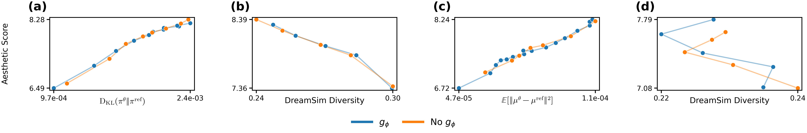

Existing reward-based fine-tuning for diffusion or flow-based generative models are motivated by different perspectives such as Soft RL, GFlowNets, and optimal control. As a result, the literature appears fragmented: methods are presented with different objectives, derivations, and stabilization heuristics, making it difficult to tell which differences are fundamental and which are merely implementational. In this paper, we show that many such methods reduce to a single underlying objective, which we term reward score matching (RSM), and that their primary design axis is how the value-guidance surrogate is constructed. Guided by this perspective, we develop simpler redesigns that improve alignment effectiveness and compute efficiency across representative settings with differentiable and black-box rewards.
Methods derived from Soft RL, GFlowNets, and optimal control all reduce to the same underlying score-matching objective. Their primary differences arise from three coupled design choices:
Common RSM Loss:
\(\mathcal{L}(\theta) = \mathbb{E}_{t_i, x_{t_i}}\!\Big[ C_1(t_i)\| s^\theta_{t_i} - (s^{\mathrm{ref}}_{t_i} + \Psi_{t_i})\|^2 + C_2(t_i)\| s^\theta_{t_i} - s^{\theta^\dagger}_{t_i}\|^2 \Big]\)
Methods differ only in how $\Psi_{t_i}$ (value guidance), $C_1(t_i)$ (temporal weight), $C_2(t_i)$ (trust region) are constructed.
🎯
Estimator Design
First and zeroth-order estimators. Lookahead depth, branching, stochasticity localization. Governs bias–variance–compute tradeoff.
⚖️
Temporal Weighting
$\gamma(t_i)$ and Normalized Influence Metric $h(t_i)$ control per-timestep optimization strength.
🛡️
Trust-Region
$C_2(t_i)$ and clipping determine how much of each update survives regularization.

Temporal Optimization Strength $h(t)$. (a, b) Successful first-order methods suppress value guidance at low-SNR timesteps, whereas improved zeroth-order methods suppress it at high-SNR timesteps. (a: Diffusion. b: Flow matching). (c) Residual ∇-DB enforces stronger trust-region constraints for low-SNR timesteps. Policy Gradient’s $C_2(t)$ is depicted for constant $r(x_0) = 1$ and $\alpha = 10^-2$
We construct a 2D toy problem with analytically tractable optimal guidance $\Psi^*_{t_i}$ to compare first-order (FO) and zeroth-order (ZO) estimators under matched compute.

Toy analysis of estimator quality under fixed compute. (a) Reference distribution and its reward-tilted target. (b) RMSE of representative FO and ZO estimators: one-step lookahead FO guidance is severely biased at low SNR, while full-rollout ZO guidance is unbiased but requires many more samples; reward centering further reduces ZO error. (c) Lookahead depth, branching, and stochasticity localization tradeoffs — shallower lookahead can outperform full-rollout under limited budget; specific branching patterns matter less than where compute is allocated.
TempFlow-GRPO allocates branching budget uniformly, even though zeroth-order guidance is intrinsically noisier at high-SNR timesteps. RSM reveals this mismatch: make clipping timestep-fair, redistribute budget toward reliable timesteps, and deactivate the noisiest step.

Mechanistic analysis (zeroth-order flow matching, Aesthetic Score, SD3.5-M). (a) Reward vs. GPU hours and (b) reward vs. KL: Equal Variance Reallocation improves reward more quickly while maintaining the reward–KL tradeoff. (c) Clip fraction at $t_9$ (solid) and $t_8$ (dashed): the baseline suppresses $t_9$ via heavy clipping. Removing it and reallocating its budget yields a clean improvement without added compute.

Zeroth-order validation. (a) GenEval on SD3.5-M: concentrating budget on low-SNR timesteps (where semantic guidance is most useful) reaches GenEval = 0.97 with a 5× wall-clock speedup over TempFlow-GRPO. (b–c) HPSv2.1 on SD1.5 (PCPO baseline): sparse branching at 10% of reverse steps improves the reward–KL Pareto frontier under matched compute.

First-order validation. Replacing local Tweedie-based gradients $\nabla_{x_t}r(\hat{x}_0)$ with terminal-image reward gradients $\nabla_{x_0}r(x_0)$ yields substantially faster reward improvement on HPSv2.1 + GenEval training prompts, where both aesthetic quality and semantic fidelity matter. (a–b) SD3.5-M (VGG-Flow baseline); (c–d) SD1.5 (Residual ∇-DB baseline).
Residual ∇-DB and VGG-Flow employ a learnable network $g_\phi$ to compensate for Tweedie approximation errors. RSM predicts this is unnecessary — and measurements confirm it.

$\|g_\phi\|$ is negligible throughout training for (a) Residual ∇-DB and (b) VGG-Flow. The network collapses toward zero due to spectral bias.

Removing $g_\phi$ maintains the reward–KL and reward–diversity Pareto frontiers while strictly reducing training time.
@article{lee2026reward,
title={Reward Score Matching: Unifying Reward-based Fine-tuning for Flow and Diffusion Models},
author={Lee, Jeongjae and Chang, Jinho and Kim, Jeongsol and Ye, Jong Chul},
journal={arXiv preprint arXiv:2604.17415},
year={2026}
}